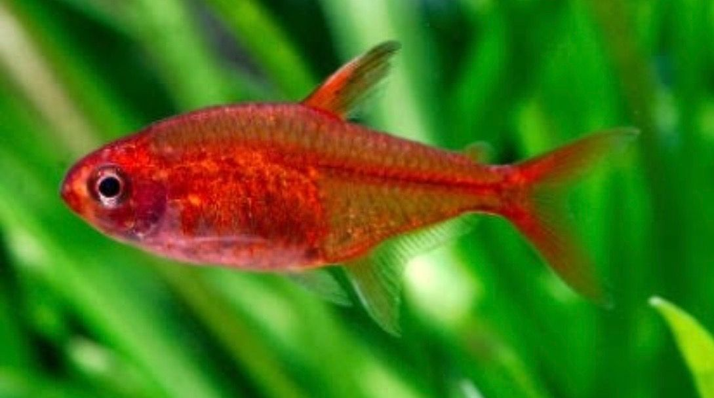
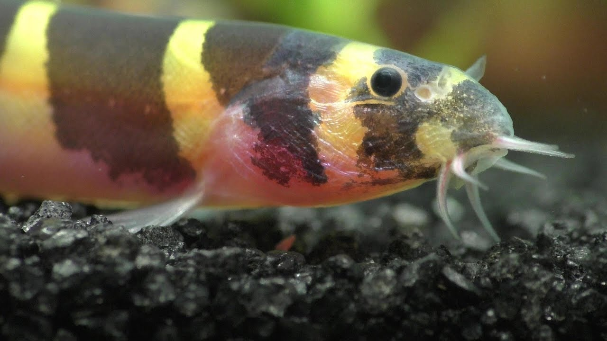
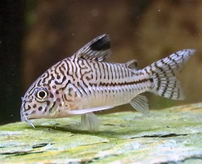
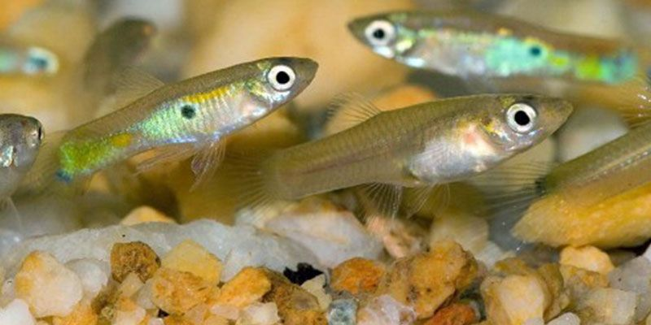
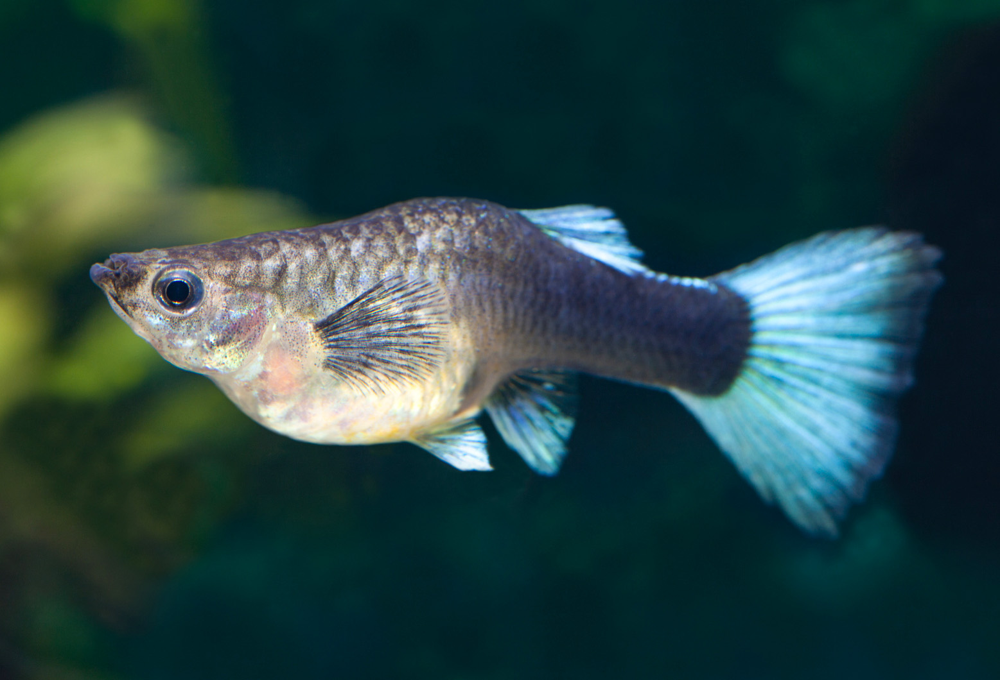

March 12, 2020
Possible Tank Mates For A Betta Fish:
Ember Tetras:

These are very colorful and active small fishes that would look really great for your aquarium but we must make sure that we keep them in a group or else the betta might attack if they are alone.
When they are in a group they are also very very attractive to see them swimming around in the tank.
By keeping them together in a group the betta fish can't bully any one fish. They eat the same food as the betta fish so it is easy to feed them we don't need to spend any extra money for buying different food for ember tetras.
The scientific name of Ember tetras is strong 'Hyphessobrycon amandae'.
They enjoy a tank with many plants.
Kuhli Locaches:

Kuhli Loaches look like small electric eels. They love to live in groups.
These groups can be of three or four Kuhli Loaches together. They love a sandy gravel.
They will search under the gravel if there is any fallen food inside.
They stay small and will not fight with the betta fish it is always better to put more than one Kuhli Loach with a betta fish to avoid any fights or bullying by the betta fish.
Kuhli Loaches are also very easy to care for. It is an omnivore. It loves to eat live food.
It has a lifespan of about 10 years. The scientific name of Kuhli Loaches is 'Pangio kuhlii'.
Cory CatFish:

Cory CatFish are a bit hard to care for comapred to other fishes. They get stressed easily if the ph of the water changes quickly.
It is the best to keep our water temeperature at the pH of 7. It will be the best for both betta fish and cory catfish.
If we keep just a corycatfish along with the betta fish then we can a tank of 10 gallons would be perfect for them.
If you want to have more cory catfishes then we need a bigger tank.
We must also make sure we cover the top of our aquarium since both betta fish and cory catfish have a chance to jump out of the aquarium.
Use gravel or subtrate that is not too sharp or rough. Cory catfish are omnivores so they can pretty much eat everything.
They are very good cleaners they find all food that is under the gravel. They will be searching for food most of the time.
They have an average lifespan of five years but we can only acheive this lifespan if we take good care of them.
Feeder Guppies And Female Guppies:


For betta fish and guppies to live together there needs to be many conditions which have to met.
Guppies love to live in water that is slightly alkaline whereas betta fish love to liv ein water that is slightly acidic.
As we know that male betta fish are very aggresive and will fight for their territory. Male guppies are also of the same they are also get aggresive and fight for their territories so if we put them in the same tank they can fight and eventually the guppy fish might die.
It is advised to put female guppies with male betta fish are they are not aggresive like male guppies and another possible combination is a female betta fish and a male guppy fish.
It is always best to keep a group of guppies with one betta fish this can avoid bullying to a large extent.
In a 10 gallon tank we can house 3 guppie fish and 1 betta fish. Guppies are herbivores food they will eat a vareity of food.
Guppy fish also eat algae which is present in your tank. We must make sure that the guppies are not eating the meat live foods which the bett fish eat.
Using a net to Seperate both the fish would be a great idea. Also a lot of hiding spots in your tank would be very beneficial so that the guppy fish can hide if the betta fish is going to attack them.
Also it is best to have a quarantine tank incase the betta fish do not get along at all with the guppy fish.
We can move the betta fish into the quarantine tank. If we follow all these steps carefully we can make sure there won't be much trouble.
Apple Snails:


Apple snails can be a really good tank mate for your betta fish. Apple snails can be quite messy they do not like bad water quality and they can get quite large.
Getting a large tank would be best if you would like to house an apple snail along with your betta fish.
You may need to add calcium additive to your aquarium for your apple snail since they need calcium to make their shell strong. We need to observe how the apple snail and the betta fish gets along see closely if the betta fish is attacking the apple snail or picking on its antena.
If this happens then we need to move the two to different tanks. Apple snails are very good cleaners they eat up all the algae and uneaten food that are in your tank.
You may need to do frequent water changes if you do not have a lfilter in your tank as apple snails are quite messy or you can purchase a betta fish filter that won't have strong currents because if we purchase a normal filter it would be very hard for betta fish to swim around since the current might be too strong and this will ultimately lead to stress for your betta fish.